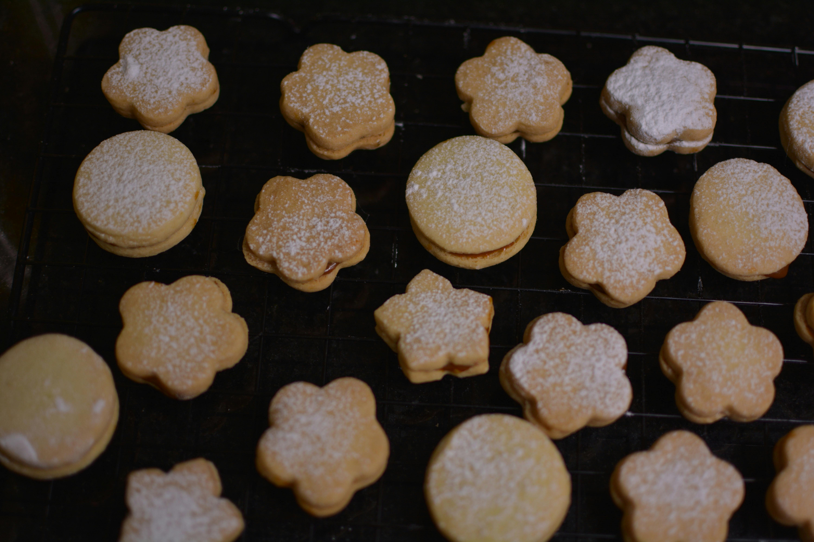

Grandma's Best Sugar Cookies

Hi friends! I have a special recipe for you today. I am sharing my husband’s grandma’s best sugar cookie recipe! It’s a soft and chewy sugar cookie recipe that is definitely a keeper. I added in some fresh Meyer lemon zest to a batch of the cookies to spruce them up for spring.
Ingredients
- 1 cup unsalted butter
- 2 cups granulated sugar
- 2 large eggs, room temperature
- 1 cup extra virgin olive oil
- 1 teaspoon pure vanilla extract
- 5 cups all purpose flour
- 2 teaspoons baking soda
- 2 teaspoons cream of tartar
- Pinch of salt
- 1/2 granulated sugar for topping
Steps
-
Preheat oven to 350 degrees F (175 degrees C). Lightly butter muffin tins and set aside.
-
Beat together the cream cheese, egg, sugar and salt. Stir in chocolate chips and set aside.
-
In a separate bowl, sift together the flour, sugar, cocoa, baking soda and salt. Add the water, oil, vinegar, and vanilla. Beat until well combined. Batter will be thin.
-
Fill muffin cups 1/3 full with the chocolate batter. Top each one with a spoonful of cream cheese mixture.
-
Bake for 30 to 35 minutes.
- Cool once done. Wait one hour before eating.
Not what you're looking for? Check out our brownies and cupcakes!